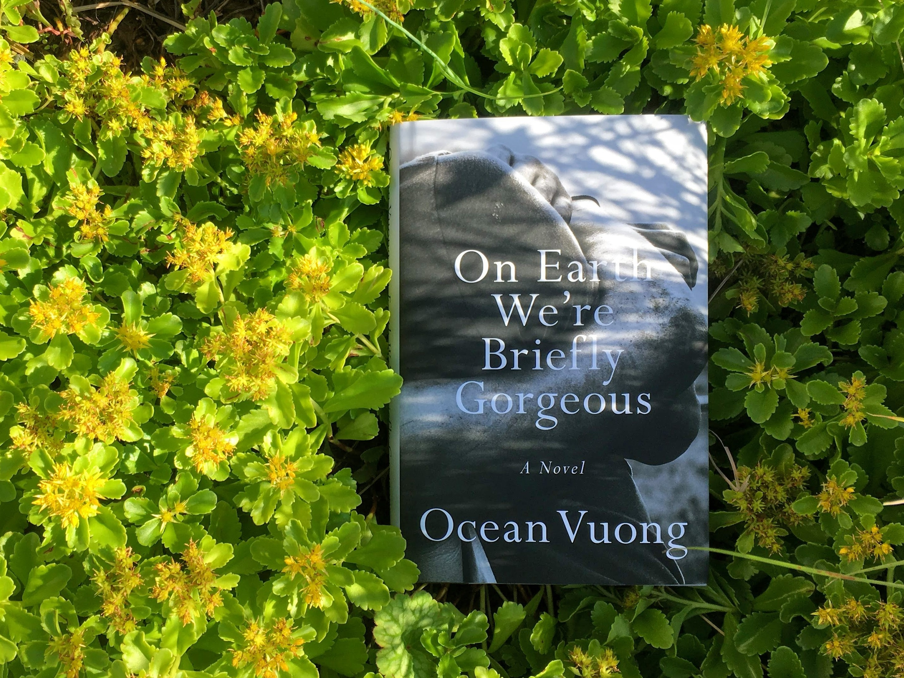

On Earth We're Briefly Gorgoeus
On Earth We're Briefly Gorgeous is a letter from a son to a mother who cannot read. Written when the speaker, Little Dog, is in his late twenties, the letter unearths a family's history that began before he was born — a history whose epicenter is rooted in Vietnam — and serves as a doorway into parts of his life his mother has never known, all of it leading to an unforgettable revelation. At once a witness to the fraught yet undeniable love between a single mother and her son, it is also a brutally honest exploration of race, class, and masculinity.
Critic
With stunning urgency and grace, Ocean Vuong writes of people caught between disparate worlds, and asks how we heal and rescue one another without forsaking who we are. The question of how to survive, and how to make of it a kind of joy, powers the most important debut novel of many years.
There are passages in the novel of real beauty and originality. Vuong writes wonderfully about work: the resigned camaraderie and irony, for instance, of the women working in Rose’s nail bar, where smells of “cloves, cinnamon, ginger, mint and cardamom” from cooking in the back room mingle with the toxic “formaldehyde, toluene, acetone, Pine-sol and bleach”, which damage their health and their hands. In the tobacco fields, where Little Dog stands out among the mostly Hispanic labourers, “you could hear their lungs working as they cut, the stalks falling in bright green splashes around their hunched backs … could hear the water inside their stems as the steel broke open the membranes, the ground darkening as the plants bled out”. The novel’s strength lies in its specifics, so exactly seen or smelled or tasted; the salt around Trevor’s neck:
“ … from the two-hour drives to nowhere and a Burger King at the edge of the county, a day of tense talk with his old man, the rust from the electric razor he shared with that old man, how I would always find it on his sink in its sad plastic case, the tobacco, weed and cocaine smoke on his fingers mixed with motor oil …”
Vuong is at his best pressing the words further and harder like this, in his effort to capture in their net the fleeting sensations of a real moment, make on his page the illusion of life. His frankness and precision, writing about Little Dog’s lovemaking with Trevor, is persuasive and moving, as is the unsparing description of grandmother Lan’s death. It’s more problematic when the flow of the story is freighted with too much of a different kind of writing: an explicit commentary on the meaning of what’s happening, or a sort of choric lyrical lamenting between scenes. “In a world as myriad as ours, the gaze is a singular act: to look at something is to fill your whole life with it, if only briefly.”